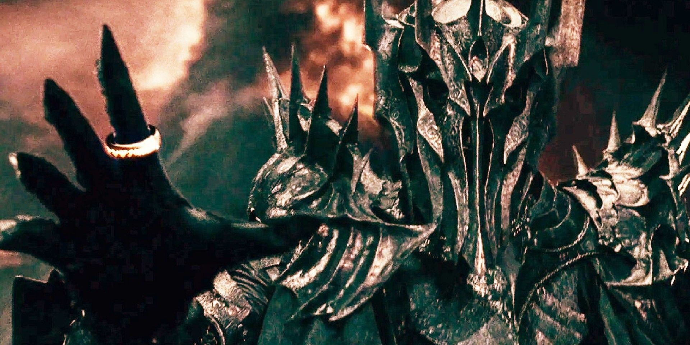

Lord Of The Rings AI Art Transforms Everyone Into '80s Style Anime Characters (Including Sauron)

The world of J.R.R. Tolkien's Lord of the Rings has inspired many creative minds over the years. But a recent AI-generated art project has given the story a refreshing new twist - by transforming every character into an '80s-style anime character.
The Lord of the Rings AI art project was created by Helsinki-based artist Jirka Vinse Jonatan Vaatainen. Using an AI tool, Vaatainen modified photos of the characters from the Lord of the Rings movies to give them an anime art style that draws heavily from '80s anime aesthetics. From the glowing hair to the exaggerated facial features, these characters look like they just stepped out of an '80s anime show, and it's a sight to behold.
Examples of the Lord Of The Rings AI Art
Perhaps the most striking transformation in the Lord of the Rings AI art project is that of Sauron. In the original movies, Sauron is a menacing dark lord with an intimidating all-seeing eye. But in the anime-style artwork, Sauron is portrayed as a hulking, muscular figure with fiery red hair and an aggressive demeanor. It's a radical change that turns Sauron into an iconic '80s anime villain.

The Hobbits, too, look vastly different in the anime-style artwork. Their curly hair is now perfectly coiffed, and their wide, innocent eyes are even bigger and more expressive than before. It's a cute and endearing transformation that captures the spirit of the lovable hobbits.

Gandalf, on the other hand, looks like he's stepped straight out of a '80s anime series. His flowing white hair and beard are more voluminous than ever, and his wise, knowing eyes seem to sparkle with a magical energy. It's a transformation that befits the venerable wizard.

Why the '80s Anime Style Works for Lord of the Rings
The '80s anime style used in the Lord of the Rings AI art project might seem like an odd fit for a story that takes place in a fantastical medieval world. However, the anime style works surprisingly well for several reasons.
1. It captures the whimsy and magic of the story
Despite its dark themes and epic battles, Lord of the Rings is at its heart a whimsical and magical story. The anime style used in the AI art project captures that whimsy and magic perfectly, with its bright colors, exaggerated features, and playful character designs.
2. It gives the characters a new dimension
The anime-style transformations of the characters also serve to give them a new dimension. The hobbits, for instance, become more than just simple, rural folk - they become wide-eyed adventurers on a fantastical quest. Similarly, the exaggerated features of Sauron and other villains make them seem even more menacing and imposing.
3. It's a refreshing new take on a beloved story
Finally, the '80s anime style used in the Lord of the Rings AI art project is simply a refreshing new take on a beloved story. Fans of the Lord of the Rings movies and books will undoubtedly enjoy seeing their favorite characters in a new light, and the anime-style artwork might also attract new fans to the story who might not have been interested otherwise.
Conclusion
The Lord of the Rings AI art project is a delightful example of how technology can be used to breathe new life into old stories. The '80s anime style used in the artwork is a bold and imaginative choice that pays off in unexpected ways, giving the characters new dimensions and making the story feel fresh and exciting again. Whether you're a diehard Lord of the Rings fan or just a casual anime fan, this AI-generated art project is worth checking out.
References and Hashtags
Keywords: Lord of the Rings, anime, AI-generated art, '80s style, Jirka Vinse Jonatan Vaatainen
Category: Entertainment
Hashtags: #LordOfTheRings #anime #art #AI #80sStyle #JirkaVinseJonatanVaatainen
Reference URLs:
Curated by Team Akash.Mittal.Blog
Curated by Team Akash.Mittal.Blog
Share on Twitter Share on LinkedIn